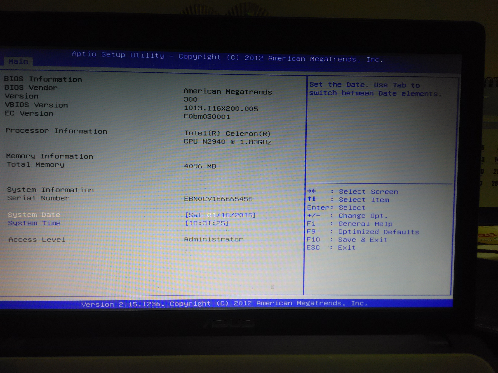
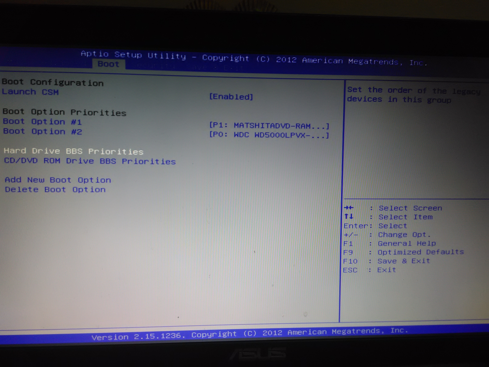
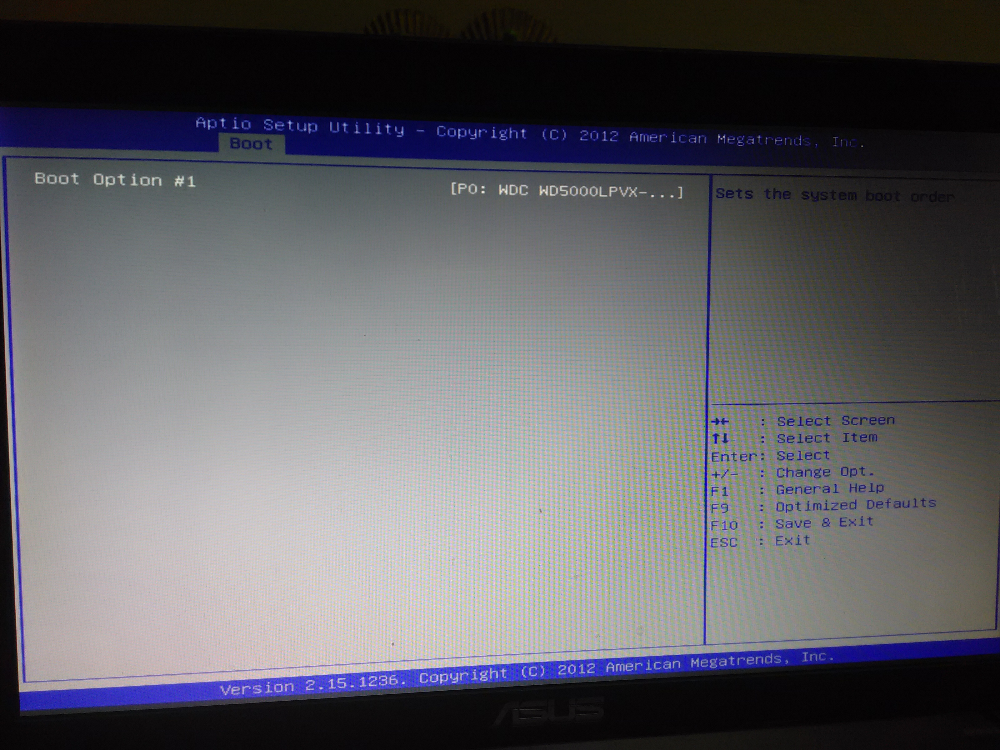
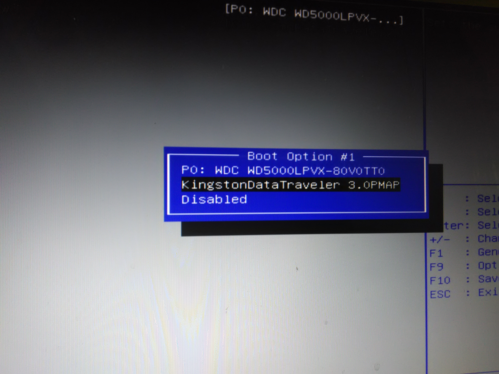
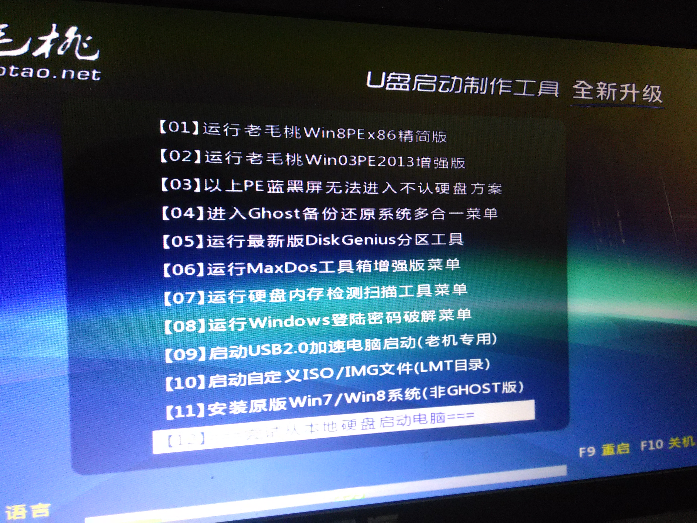
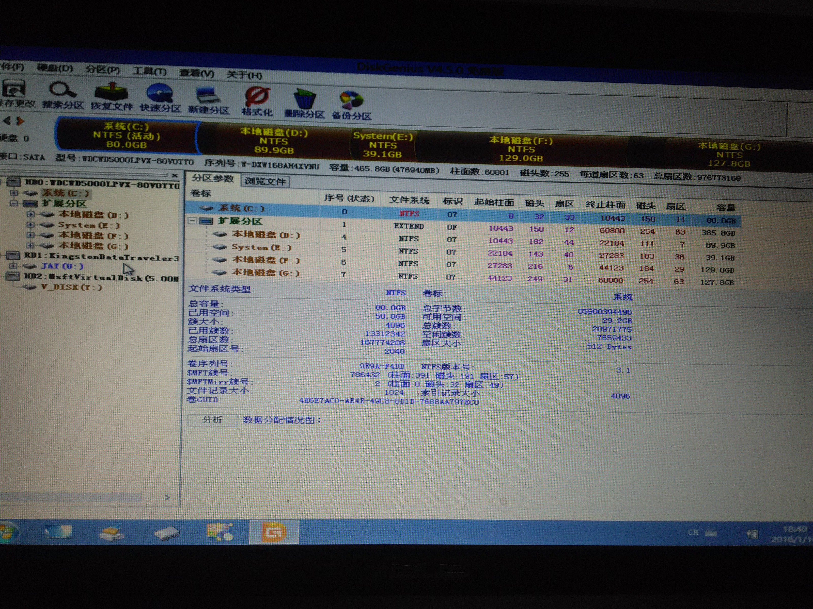
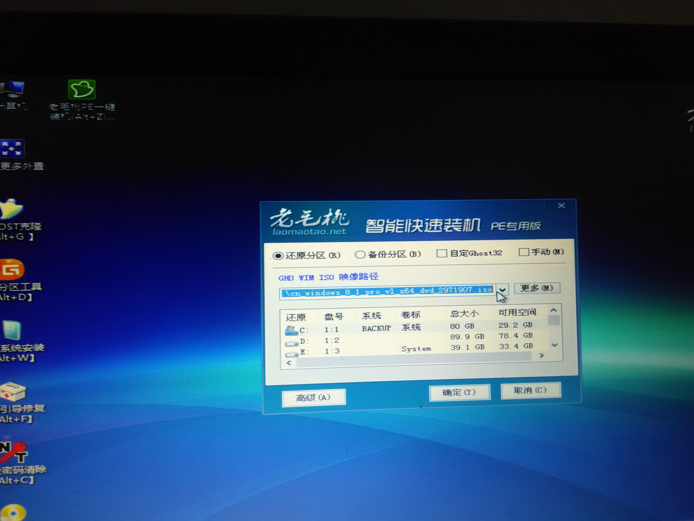

装系统
想要学装系统的骚年们，你们的福利来了，这篇文章将会教你如何装系统，一步一步手把手地教你哟！
其实装系统并不难，装系统目前最常见的有两种，一种是硬盘安装，这种方法很简单，系统下下来了直接运行就可以了，还有一种方法就是U盘安装，也是这篇文章接下来要介绍的。
原料：
- 制作有U盘启动的U盘，至于怎么制作U盘启动请自行百度这不涉及到本文章的内容
- 系统（可以点下面直接下载）
- 电脑一台
接下来进入正题，如何装系统。
如果要用U盘装系统的话首先得进入电脑的bios界面，一般有的电脑一开机进入开机logo的下面会有个进入设置的提示，有的话按照下面的来。
如果没有的话台式电脑一般是del键。笔记本分很多种情况有:F1 F2 fn+F2,还有Thinkpad的F11，进入如下界面
然后按方向键→选择boot标签
按下方向键将光标移动到Hard什么什么的英文哪里回车
然后在第一项那里回车，选择自己的U盘这里显示的我的是第二个。（有些机型可能不一样，由于bois界面繁多，这里不能一一介绍，总之就是想办法设置U盘启动位第一启动）设置完毕后按F10，回车让电脑重启
重启以后会出现以下界面（我这个是比较老的版本的老毛桃，然后选择第一个回车）
稍等片刻以后会进入U盘的系统，要想装系统先用桌面上的分区工具把系统盘格式化
格式化以后点开一键装机选择好要安装的系统和磁盘，确定就可以了
之后能做的就是等，从我这下的系统都是纯净版的，下下来桌面只有一个回收站，至于怎么把其他图标显示出来请自行百度，不是本文章的内容，同时系统还要激活，激活软件也自行百度下载，驱动用驱动精灵安装。其他的应该没什么了，打完收工，有意见到甜言蜜语去留言哦！